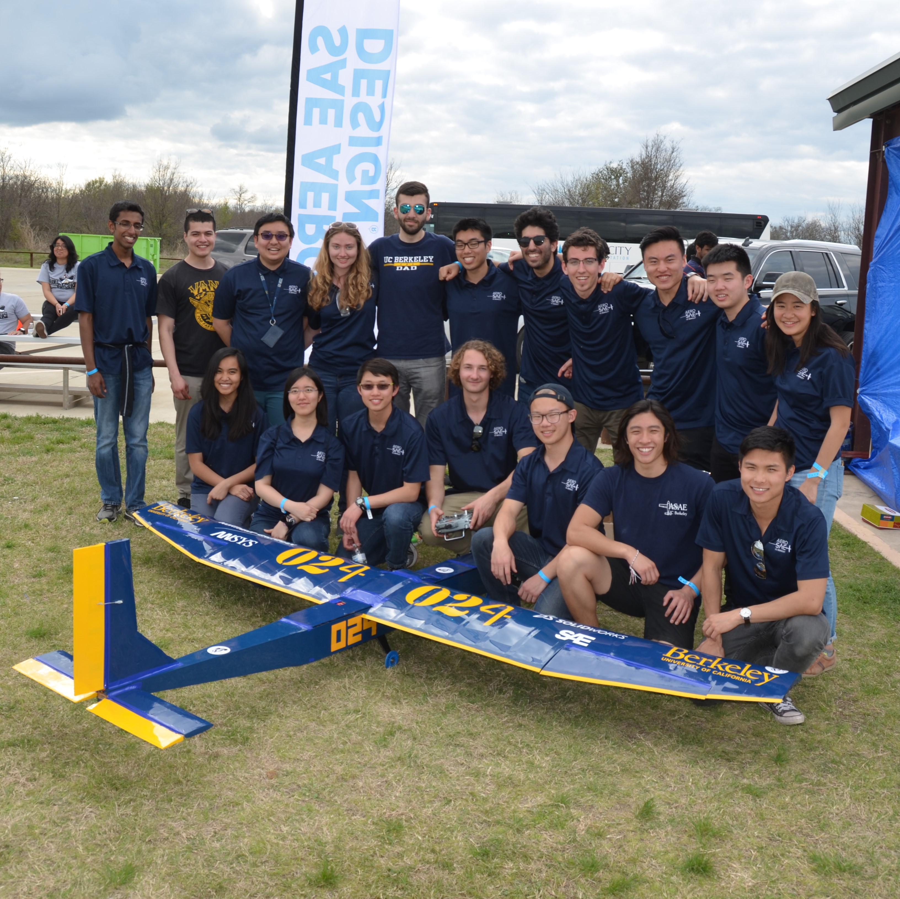

Projects
Airplanes, Arduino, and more!
|
|
ProjectsAirplanes, Arduino, and more! |
SAE West Competition Airplane
Every year, UC Berkeley's ASAE team, designs and manufactures remote controlled airplanes for the international SAE West competition. Design begins with engineering analysis to choose airfoils for the wing and empennage and determine the geometries of each part of the plane. Next, we build and test fly prototypes of our planes. From the prototype flight data and after more analysis, we finalize our design and build two airplanes for the competition.
As the empennage design lead, my focus was on the stability of the airplane. For this year's plane, Cal-5, I designed a fuselage-mounted tail that provided stability as well as pitch and yaw control to the airplane during its flight. I managed the design, prototyping, and manufacturing of the empennage and trained subteam members on design and building techniques for the tail. During the design phase, we used SolidWorks to CAD the tail components and ANSYS for CFD analysis. Balsa was used for the tail's ribs and sheeting, while spruce was used for its spars and servo mounts. The tail is covered in Monokote for an aerodynamic surface.
Cal-5 placed fifth in flight at the SAE West Competition in March 2017. We were all very proud to see our hard work take off!
Affectionately called AirBears and CalVisitor after our school Wi-Fi networks, our competition planes had a nine-foot wing, a three-vertical-stabilizer empennage, and a conventional fuselage. We placed 29th in the regular class competition, and this was our 2nd year of competing.
As part of the empennage subteam this year, I was involved in the early stages of design up to manufacturing our final competition planes. I modeled empennage designs with SolidWorks, prepared parts them for laser cutting with Adobe Illustrator, and employed my woodworking skills in assembling the plane.

|

|
 |
STEVE
Teammates: Arman Mesropyan, Elton Su, Charles Lin
Main roles: SolidWorks modeling, theoretical calculations, development of fin undulation model, Arduino code, electronics prototyping and assembly
STEVE (Stingray Emulating Vehicle) is a stingray-inspired robot that propels through water by undulating its fins in a sinusoidal motion, imitating a stingray. It swims near the surface of the water using six waterproofed servos.
There has been rising scientific interest in stingray-like robots, since fin undulation is an efficient method of underwater propulsion and causes little disturbance in the water, making such robots appealing for ocean life research. For this project, we wanted to develop our own stingray-inspired robot that was cost-effective. Our two main goals were waterproofing and effective propulsion by fin undulation.
AudiBears
Teammates: Alix Carson, Christian Castenada, Rohan Castelino
Main roles: PSoC code, electronics prototyping and assembly
For this project, we designed a drawing turntable that moves according to an incoming sound wave. The arm of the turntable moves according to the sound wave's frequency, and the turntable rotates according to the amplitude.
The three main focuses of our project were GUI, multitasking, and real-time processing. The GUI was implemented in LabVIEW. Multitasking was accomplished mainly in LabVIEW through the use of a SubVI. Real-time processing was done on both LabVIEW and the PSoC, which handled motor actuations. We used a continuous servo for the drawing arm and a DC motor for the turntable.
Ichiban
Teammates: Arman Mesropyan
Main roles: Arduino code and electronics, Bluetooth implementation
Ichiban is a crawling and wiggling robot that is controlled via Bluetooth. The robot, made of laser cut wood, moves primarily by pushing itself across the floor with its arm, which moves via a high-torque servo motor. It can also move by "wiggling" via a continuous servo motor attached to the robot's base, which is also how it turns. The code and electronics were done with Arduino and an Adafruit Bluefruit LE SPI Friend.
CalCase
Teammates: Maximilien Boutry, Shruti Aggarwal
Main roles: SolidWorks modeling, 3D printing
The CalCase is a phone case that holds a credit card that slides in and out of the case, an ID card that fits in a clear rubber sleeve, and a key ring in a holder at the top of the case.
Through this project, we learned about the steps of the manufacturing process, from design to tolerancing to additively processing the components.
We consulted the machinist's handbook to select fits for each component. The case was modeled using SolidWorks and manufactured using the Objet 3D printer.
Click here to view our project poster.
OrthoSlap
Teammates: Mark Ansell, Oladipo Toriola, Sabrina Hua, Cozmo Nakamura, Bryant Phan
Main roles: AutoCAD modeling
Orthoslap is a die and cards matching game designed to introduce engineering students to the concepts of orthographic projection and multiview engineering drawings. The game aims to strengthen 3D visualization skills while also encouraging interaction and communication between peers.
Each set of Orthoslap consists of one 2x2x2 inch master die, 6 sets of 6 cards corresponding to each face of the die, and 6 mini dice for each player to aid visualization. Gameplay consists of each player "slapping" down the correct top view to each roll of the master die. The dice were modeled using SolidWorks and AutoCad and manufactured with a 3D printer. The cards were drawn with AutoCad and designed with Photoshop.
Project poster
Project report
Game instructions